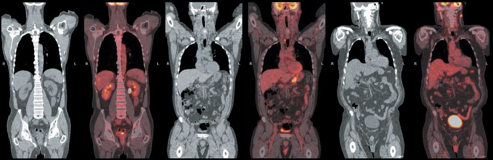
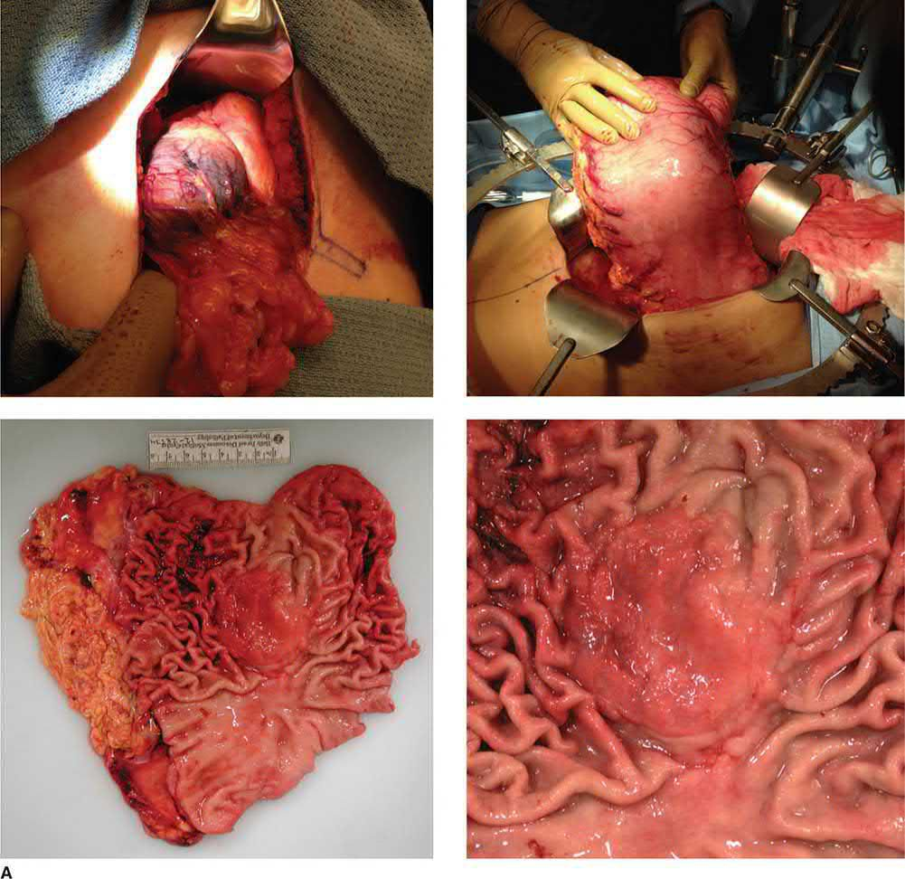
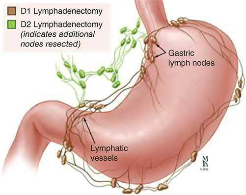
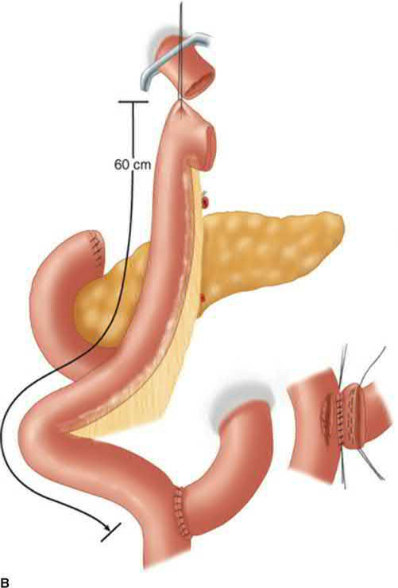

Gastric Cancer
Summary
- Gastric cancer (predominantly adenocarcinoma) is a major cause of cancer mortality worldwide; its prognosis tends to be poor, with cure rates little better than 5–10% overall, although better outcomes are achieved in Japan, where the disease is common and screening is established [1].
- Gastric cancer is eminently curable when caught early, but late presentation is common and drives poor overall survival; the only curative treatment is resectional surgery [1].
- More than 50% of patients present with disease already extending beyond locoregional confines [2].
Definition
Gastric tumours may arise from mucosa (adenocarcinoma), the connective tissue of the stomach wall (gastrointestinal stromal tumours, GISTs), neuroendocrine tissue (carcinoid tumours), or lymphoid tissue (lymphomas), with adenocarcinoma being the dominant "gastric cancer" [2]. Gastric cancer is divided into early gastric cancer, defined as cancer limited to the mucosa and submucosa regardless of nodal status (T1, any N), and advanced gastric cancer, which invades the muscularis [1].
Pathophysiology
- The Laurén classification describes two principal histological forms: intestinal gastric cancer, which resembles carcinoma elsewhere in the tubular GI tract, forms polypoid tumours or ulcers, and probably arises from areas of intestinal metaplasia; and diffuse gastric cancer (often with signet ring cells), which infiltrates deeply without forming an obvious mass and spreads widely through the gastric wall with a worse prognosis [1].
- Early gastric cancer is further subclassified by the Japanese classification into protruding (type I), superficial (type II: a-elevated, b-flat, c-depressed), and ulcerated (type III) forms; advanced gastric cancer is classified by the Borrmann system into polypoid (type 1), ulcerating (type 2), infiltrating/ulcerating (type 3), and infiltrating/linitis plastica (type 4), the latter two being commonly incurable [1].
- The Cancer Genome Atlas identified four molecular subtypes: Epstein-Barr virus positive, microsatellite unstable, genomically stable, and chromosomal instability, with recurrent mutations in genome-integrity genes (BRCA2, TP53, ARID1A), chromatin remodelling genes, and cell-adhesion genes (RHOA, CDH1) [1].
- Spread occurs by direct invasion into adjacent organs (pancreas, colon, liver), lymphatic permeation/emboli (which may reach supraclavicular nodes, Troisier's sign), haematogenous spread (first to liver), and transperitoneal spread once the serosa is breached, the last indicating incurability and giving rise to Krukenberg tumours (ovarian metastases) and Sister Joseph's nodule (umbilical metastasis) [1].
- Distant metastases are uncommon in the absence of lymph node involvement [1].
Clinical features
- Early gastric cancer has no specific features distinguishing it from benign dyspepsia, requiring a high index of suspicion; any new-onset dyspepsia over the age of 55 should be considered due to adenocarcinoma until proven otherwise [1][2].
- Advanced disease produces early satiety, bloating, distension, and vomiting; the tumour frequently bleeds, causing iron-deficiency anaemia; obstruction leads to dysphagia (if proximal), epigastric fullness, or vomiting; weight loss can be profound [1][2].
- Symptoms include pain unrelieved by eating and weight loss [3].
- Non-metastatic effects include migratory thrombophlebitis (Trousseau's sign) and deep venous thrombosis [1].
- Signs include a palpable epigastric mass and a palpable left supraclavicular (Virchow's) node signalling disseminated disease [2][3].
- Krukenberg tumours represent ovarian metastases [3].
Etiology
- H. pylori is epidemiologically linked to carcinoma of the body and distal stomach but not to proximal gastric cancer, whose etiology remains unclear though it is associated with obesity and higher socioeconomic status [1].
- Risk factors include pernicious anaemia, gastric atrophy, gastric adenomatous polyps (15% cancer risk), prior peptic ulcer surgery (particularly drainage procedures such as Billroth II/Pólya gastrectomy, roughly four-fold increased risk, linked to bile reflux and intestinal metaplasia), cigarette smoking, industrial dust exposure, diets rich in nitrosamines (cured/pickled foods) and salt, antioxidant deficiency, chronic atrophic gastritis, and blood group A [1][2][3].
- The decline in gastric cancer incidence among Japanese families emigrating to the USA supports a strong dietary/environmental component [1].
- About 85% of gastric cancers are sporadic [3].
- Hereditary diffuse gastric cancer (HDGC) is caused by CDH1 (E-cadherin) mutation, autosomal dominant, with lifetime gastric cancer risk of about 70% in men and 56% in women, and increased risk of lobular breast cancer in affected women; prophylactic gastrectomy is recommended between ages 20–40 [3][4].
- Other hereditary syndromes conferring risk include FAP, Lynch syndrome, Peutz-Jeghers syndrome, juvenile polyposis, and Li-Fraumeni syndrome [3].
- Atrophic gastritis is the single most common premalignant condition for gastric cancer via progression to intestinal metaplasia and dysplasia [4].
- The antrum is the most common site overall (40% of gastric cancers) though in the West the proximal stomach/GOJ has become the most common site, with adenocarcinoma at the GOJ having doubled in incidence in the UK over 30 years [1][3].
Diagnosis
- Upper GI endoscopy (OGD) with biopsy is the first-line investigation [2][3].
- CT of chest/abdomen/pelvis assesses the primary tumour and distant metastases; barium meal is reserved for cases where OGD fails or is unavailable [2][3].
- Endoscopic ultrasound (EUS) assesses depth of tumour invasion and local nodal involvement, particularly for proximal tumours; suspicious nodes are sampled by EUS-FNA [2][3].
- Staging (diagnostic) laparoscopy with peritoneal washings/lavage is indicated before resection or neoadjuvant therapy for tumours ≥T2, and can detect occult peritoneal disease not seen on CT in up to 36% of cases in published series, an important component given the risk of futile radical surgery in incurable disease [1][3][4].
- CT-PET is used in staging proximal/GOJ tumours to exclude occult disseminated disease and for restaging after neoadjuvant treatment [2].
- Unresectability is indicated by peritoneal or distant metastases, SMA/celiac encasement, positive para-aortic nodes, or root-of-mesentery involvement; splenic/splenic vessel involvement alone remains resectable with en-bloc splenectomy [3].

Scoring and Severity
- Gastric cancer is staged using the UICC/TNM system (8th edition): T1 (lamina propria/muscularis mucosae/submucosa; T1a lamina propria/muscularis mucosae, T1b submucosa), T2 (muscularis propria), T3 (subserosa), T4a (perforates serosa), T4b (invades adjacent structures); N1 (1–2 nodes), N2 (3–6 nodes), N3a (7–15 nodes), N3b (≥16 nodes); M0/M1, with non-regional intra-abdominal nodes (retropancreatic, mesenteric, para-aortic), liver involvement, or peritoneal seedlings all classified as M1 [1].
- Tumours with an epicentre within 5 cm of the GOJ and extending into the oesophagus are staged as oesophageal cancer; other tumours within 5 cm of the GOJ (not extending into the oesophagus) and all other gastric cancers use the gastric staging system [1][2].
- Overall stage groupings range from IA (T1N0M0) through IV (any T, any N, M1) [1].
- The Japanese Research Society for Gastric Cancer assigns a station number to each lymph node group (1–20+) to standardize pathological nodal staging, underpinning the D1 (perigastric nodes) versus D2 (nodes along the major arterial trunks) resection distinction [1].
Treatment and Management
- Most operable patients should receive neoadjuvant (perioperative) chemotherapy, supported by level 1 evidence of improved survival; the FLOT4 trial showed FLOT (fluorouracil, leucovorin, oxaliplatin, docetaxel) chemotherapy conferred a significant survival advantage over the older ECF (epirubicin, cisplatin, 5-FU) regimen (50 vs. 35 months median survival) [1].
- Neoadjuvant chemoradiotherapy is indicated for ≥T2 tumours or those with positive perigastric nodes; adjuvant chemotherapy is indicated for ≥T3 tumours or node-positive disease [3].
- Endoscopic resection is appropriate only for very early (Tis/T1, especially <2 cm) tumours and is not appropriate for T2 tumours given prohibitive recurrence risk [2][4].
- Trastuzumab (Herceptin) offers a survival benefit in the minority (<20%) of patients with HER2-positive metastatic gastric cancer, though the absolute benefit is modest (~4 months) [1].
- Palliative chemotherapy uses platinum-containing triplets or FLOT, with docetaxel-containing regimens increasingly used second-line [1].
- Palliative radiotherapy has a role mainly for painful bony metastases given radiosensitive structures nearby limiting dose [1].
- Diffuse-type (linitis plastica) gastric cancer often presents with distant metastasis at diagnosis, and initial management should prioritize systemic therapy and enteral nutritional access alongside diagnostic staging laparoscopy [4].
Surgeries
- Complete surgical resection with adjacent lymphadenectomy offers the best chance of long-term survival, via total, subtotal, or partial gastrectomy depending on tumour location [2].
- Distal (antral) tumours are treated with subtotal (distal) gastrectomy; proximal tumours require total gastrectomy with oesophago-jejunal anastomosis, both requiring 5 cm margins [3].
- Total gastrectomy is performed via a long upper midline incision, removing the stomach en bloc with the greater and lesser omentum; the duodenum is divided distally, hepatic/suprapyloric/left gastric artery nodes are cleared, and dissection proceeds along the splenic artery; resection margins should be >5 cm clear of tumour with frozen section if in doubt [1].
- GI continuity is restored with a Roux-en-Y oesophagojejunostomy, with an alimentary limb of at least 50 cm to avoid bile reflux oesophagitis [1].
- D1 resection removes perigastric (N1) nodes; D2 resection additionally clears nodes along the major arterial trunks (N2); most specialist centres perform D2 lymphadenectomy while sparing the spleen, pancreas, and station 10 (splenic hilar) nodes [1].
- No prophylactic splenectomy is needed; R0 resection with D1 nodal clearance along the lesser/greater curve nodes is the surgical goal [3].
- T4 tumours require en-bloc resection of involved adjacent structures, including liver resection when needed [3].
- Palliative resection is appropriate for obstruction or bleeding and need not be radical; a high gastroenterostomy is a poor palliative option due to inadequate emptying and bile reflux, and a wide Roux loop anastomosis is often preferred; proximal obstructing tumours can be palliated with stenting, distal ones with gastrojejunostomy bypass [1][3].
- Diffuse gastric cancer (linitis plastica) is generally treated with total gastrectomy given its diffuse nature [3].



Complications
- Postoperative complications of gastrectomy include leakage from the oesophagojejunostomy (often manageable conservatively given a Roux-en-Y limb carries mainly saliva/food), duodenal stump leak (usually related to distal obstruction, managed with drains and a controlled duodenal fistula via Foley catheter if biliary peritonitis develops), and secondary haemorrhage from septic collections eroding exposed vessels after radical vascular dissection, which can be catastrophic [1].
- Long-term complications include nutritional deficiencies and vitamin B12 deficiency from loss of parietal cell mass, requiring routine replacement, with little functional difference reported between total and subtotal gastrectomy patients [1].
- The most common site of relapse after radical gastrectomy is the gastric bed, reflecting inadequate primary tumour clearance; widespread nodal/intraperitoneal metastases and liver metastases are common, with lung and bone dissemination usually occurring only after liver metastases are established [1].
Prognosis
- In Japan, approximately 75% of patients achieve a curative resection, with an overall 5-year survival of 50–70% among those; in the West, only 25–50% of surgical patients achieve curative resection, with 5-year survival around 25–30%, a difference attributed to earlier diagnosis, screening, and surgical standardization in Japan, as well as stage migration effects [1].
- Early gastric cancer carries 5-year survival rates around 90% [1].
- Overall 5-year survival is approximately 35% for intestinal-type gastric cancer and 25% for diffuse-type (linitis plastica), which carries a less favourable prognosis [3].
- Prognosis is strongly associated with stage of disease at diagnosis [2].
- Presentation with clinically significant gastric cancer in hereditary diffuse gastric cancer (CDH1 mutation) carries a very poor prognosis [4].
References
- Bailey & Love's Short Practice of Surgery, 28th ed., Ch. 67, The stomach and duodenum
- Oxford Handbook of Clinical Surgery, 5th ed., Ch. 8, noting an 8th-edition cutoff at 2 cm proximal to the cardia for the oesophageal-vs-gastric staging boundary
- The ABSITE Review, 2022, Ch. Stomach
- Schwartz's Principles of Surgery: ABSITE and Board Review, Ch. 26, Stomach
- Maingot's Abdominal Operations, 13th ed., Ch. 31